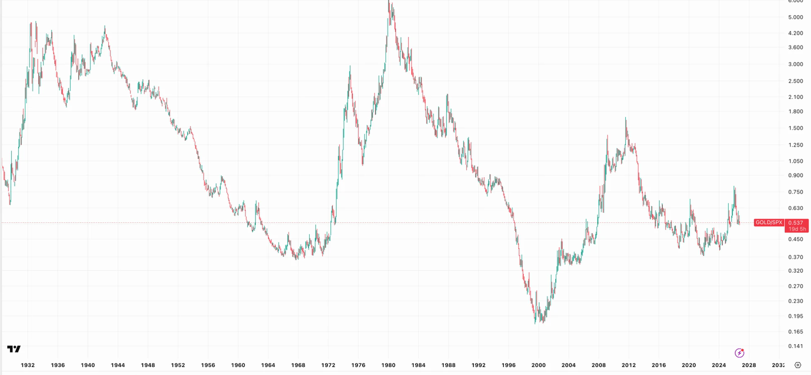

Knappe Werte
Gold, Silber, Kupfer — warum ich hinschaue, wie man Rohstoffe gegen Aktien liest, welche Kürzel dazugehören und was gerade dagegen spricht.
Derselbe Betrag, ein anderer Maßstab
1999 kostete eine Unze Gold rund 245 Euro. Heute kostet sie 3.745. Wer seit der Einführung des Euro in Gold rechnet, hat gut 93 Prozent der Kaufkraft verloren — aus 100 Euro Goldwert wurden rund sechseinhalb.
Eigene Rechnung. Startwert: 7.879 € je Kilo, der erste in Euro notierte Goldpreis von 1999 (= 245 € je Unze). Endwert: 3.744,75 € am 11.10.2026.
Das ist kein Zusammenbruch des Euro. Es ist ein anderer Maßstab: Gold lässt sich nicht nachdrucken, Geld schon. Deshalb zeigt dieser Vergleich nicht, wie schlecht der Euro ist, sondern wie viel Geld in 27 Jahren entstanden ist.
Mir hilft der Vergleich als Erinnerung, nicht als Prognose: Wer nur in Euro denkt, übersieht, dass sich die Maßeinheit selbst bewegt.
Drei Knappheiten, die ich beobachte
Gold — die Käufer sind nicht wir
Im zweiten Quartal 2026 haben Zentralbanken netto 289 Tonnen Gold gekauft, so viel wie in keinem zweiten Quartal zuvor. Das ist der Teil der Nachfrage, der nicht auf Kurse schaut: Reserven werden umgeschichtet, weil Dollarguthaben einfrierbar sind und Gold nicht.
Silber — das sechste Defizitjahr in Folge
Seit sechs Jahren wird mehr Silber verbraucht als gefördert, die Lücke wird aus Lagerbeständen gedeckt. Silber ist dabei halb Edelmetall, halb Industriemetall — Photovoltaik und Elektronik nehmen den Großteil. Das macht es schwankungsfreudiger als Gold, in beide Richtungen.
Kupfer und Aluminium — die Kabel der KI
Jedes Rechenzentrum, jedes Stromnetz, jedes E-Auto braucht Kupfer. In zehn Jahren ist Kupfer rund 160 Prozent teurer geworden, Aluminium rund 44. Beim Aluminium kippt der Überschuss nach gängigen Schätzungen ab 2027/28 in ein Defizit von etwa 1,4 Millionen Tonnen — rund zwei Prozent des Verbrauchs, mit einer erwarteten Dauer von etwa fünf Jahren.
Neue Minen brauchen zehn bis fünfzehn Jahre. Das ist der ganze Kern der These: Die Nachfrage kann schnell steigen, das Angebot nicht.
Kupfer und Aluminium: Preisveränderung über zehn Jahre, gerundet, Stand Oktober 2026. Silber: Jahresverlauf 2026. Gold: Abstand zum Euro-Allzeithoch von 4.553 € im Januar 2026.
Wie man Aktien gegen Rohstoffe liest

Chart: TradingView, Symbol GOLD/SPX, Monatskerzen, logarithmische Skala.
Die interessante Frage ist nicht „steigt Gold?", sondern „steigt Gold schneller als Aktien?" Dafür gibt es einen einfachen Trick: Man teilt das eine durch das andere und schaut sich nur diese eine Linie an.
Linie steigt
- Rohstoffe laufen besser als Aktien
- typisch für Phasen mit Inflation und knappem Angebot
- die 1970er und die 2000er sahen so aus
Linie fällt
- Aktien laufen besser
- typisch für Phasen mit billigem Geld und Technologie-Booms
- die 1990er und die 2010er sahen so aus
So tippst du es in TradingView ein — einfach als Symbol eingeben, Schrägstrich inklusive:
Der erste ist der wichtigste: Gold geteilt durch den S&P 500, mit Jahrzehnten Geschichte. Der zweite nimmt einen ganzen Rohstoffkorb statt nur Gold. Der dritte — Kupfer durch Gold — ist der Stimmungsmesser: steigt er, erwartet der Markt Wachstum; fällt er, erwartet er Ärger. Der vierte vergleicht Minenaktien mit dem Gesamtmarkt. Monatschart und logarithmische Skala, sonst sieht man das Muster nicht.
Die Kürzel
Beispiele, keine Empfehlungen. Minenaktien sind der gehebelte Weg: Steigt das Metall um zehn Prozent, bewegen sich die Minen oft um dreißig — nach unten genauso.
| Zweck | Kürzel | Was es ist |
|---|---|---|
| Gold physisch | Xetra-Gold | physisch hinterlegt, Lagerung in Frankfurt, lieferbar. Der einfachste Weg, über Xetra in Euro. |
| Breite Miner | GDIG / WMIN | VanEck S&P Global Mining, ISIN IE00BDFBTQ78, laufende Kosten 0,50 %. Derselbe Fonds, zwei Linien — GDIG in Amsterdam, Mailand und Zürich, WMIN auf Xetra. Enthält Eisenerz, Kupfer, Silber, Gold. |
| Goldproduzenten | IS0E | iShares Gold Producers, Xetra, 0,55 %. Nicht mit GDIG verwechseln. |
| Goldminen groß | GDX | VanEck Gold Miners — US-Notierung |
| Goldminen klein | GDXJ | Junior Gold Miners, schwankt deutlich stärker — US-Notierung |
| Kupferminen | ICOP | iShares Copper and Metals Miners — US-Notierung |
| Silberminen | SLVP / SIL | iShares 0,39 % gegen Global X 0,65 %. SIL ist deutlich handelbarer — US-Notierungen |
Als Sparplan gedacht
Rohstoffe sind der Teil eines Depots, bei dem Einmalkäufe besonders wehtun — der Zeitpunkt entscheidet fast alles. Genau deshalb finde ich hier den Sparplan besonders sinnvoll: eine feste kleine Rate, jeden Monat, über Jahre.
Mein Maßstab für die Größe: ein Beiwerk, kein Hauptgericht. Der Kern bleibt ein breiter Welt-ETF — dazu steht alles im Fahrplan für den Anfang.
Die ehrliche Seite
Gold hat gerade einen Gegner
Gold zahlt keine Zinsen. Solange die Inflation hoch bleibt und die Notenbanken die Zinsen deshalb oben halten, konkurriert Gold mit Anleihen, die etwas abwerfen — und verliert diesen Vergleich oft.
Deshalb steht Gold rund 18 Prozent unter seinem Euro-Hoch von 4.553 € aus dem Januar 2026, und Silber liegt 2026 zweistellig im Minus. Das ist keine Ausnahme von der These, das ist die These: Knappheit wirkt langsam, Zinsen wirken schnell.
Meine Erwartung — und es ist eine Erwartung, keine Vorhersage: Bis zum Jahreswechsel bleibt das Bild so. Ab Februar oder März könnte es sich drehen, wenn die Zinsschraube locker wird. Dann wäre aus dem Gegner ein Rückenwind geworden.
Konkrete Kursziele nenne ich bewusst nicht. Die Zahlen, die dazu herumgehen, finde ich in keiner belastbaren Quelle, und ich schreibe hier nichts hin, was ich nicht belegen kann.
- Minen sind keine Metalle. Du kaufst Unternehmen mit Schulden, Streiks, Stromkosten und Ländern, die Verträge ändern.
- Silber schwankt brutal. Zwei Drittel der Nachfrage sind Industrie — in einer Rezession bricht genau die weg.
- Kupfer ist ein Konjunkturmetall. Die Knappheitsgeschichte stimmt langfristig und hilft dir in einem Abschwung trotzdem nicht.
- Steuern und Kosten. Physisches Gold und Fonds werden unterschiedlich behandelt. Das ist nichts, was ich dir allgemein beantworten kann.
Was ich tue
Ich halte einen kleinen Teil breit über Miner und physisches Gold, kaufe per Sparplan weiter und beobachte die Linie Gold geteilt durch S&P 500 auf dem Monatschart. Dreht die nach oben und bleibt dort, wird der Teil bei mir größer. Vorher nicht.
Was ich nicht tue: auf einen Ausbruch wetten, der ein Datum hat.